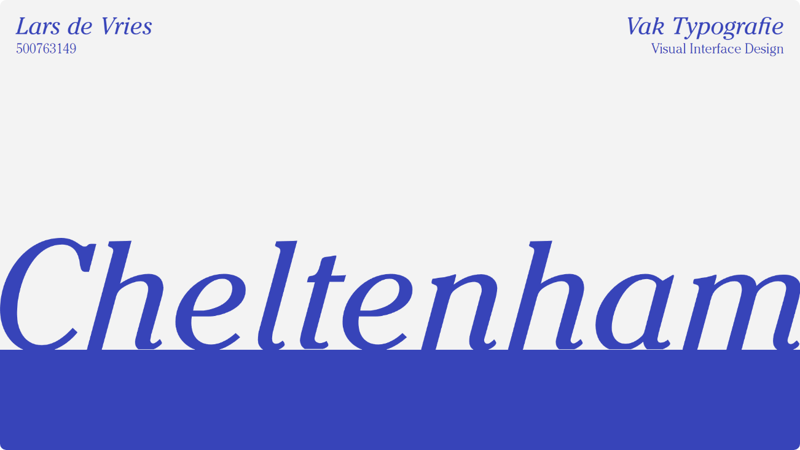

Typografie
Grid & Kleur
Meesterproef
Interface & Interactie
Interface & Beweging
Beeldtaal
In de eerste week van de minor gingen we op excursie naar Brussel. Tijdens deze excursie diende we foto's te maken van mooie of bijzondere typografische uitingen die we tegenkwamen in de openbare ruimte. Voor het vak Typografie moesten we vervolgens één lettertype kiezen die we waren tegengekomen, voor mij was dit 'Cheltenham'. De volgende stap was om onderzoek te doen naar de oorsprong van dit gevonden lettertype, op basis daarvan moest een fysieke poster en een website worden opgeleverd.
De opdracht was om een visueel ontwerp en een digitaal prototype van een laptop/desktop website te maken over producten met een hernieuwde waarde voor de gebruiker, hierbij was het belangrijk dat je hierin ook je eigen persoonlijke visie op dit thema overbrengt. Ik heb uiteindelijk gekozen om een website te maken voor een fictieve meubelwinkel die moderne meubels maakt van gerecyclede materialen en deze verkoopt in hun fysieke winkel. Het doel van de website is om bezoekers kennis te laten maken met de producten die ze verkopen en vooral te laten zien hoe zij duurzaam te werk gaan.
Het afsluitende project van de minor was de meesterproef, hierbinnen moest je de kennis van de verschillende vakken toepassen in één laatste opdracht. Deze opdracht was om een een visuele interface te ontwerpen voor een zelf gekozen casus. Ik heb uiteindelijk de keuze gemaakt om een interface te ontwerpen over een artikel dat gaat over ruimteafval. Ik heb specifiek voor dit artikel gekozen omdat ik wel eens gehoord had dat er een hoop ruimtepuin om onze aarde heen zweeft, echter wist ik niet hoe groot de ernst van dit probleem was. Uiteindelijk heb ik een Hi-Fi prototype gemaakt waarin ik gebruikers wil informeren, en tevens wil waarschuwen over de mogelijke gevolgen van dit probleem. Dit prototype heb ik gemaakt in Figma, voor mij was dit de eerste keer dat ik gebruik maakte van deze tool.
De opdracht was om een digitale tijdlijn te ontwerpen en te realiseren met behulp van HTML, CSS en indien nodig Javascript. Deze tijdlijn moest gaan over een klassiek karakter of object uit bijvoorbeeld een film, serie, game of boek en moet de ontwikkeling van het karakter door de jaren heen kunnen weergeven. Het is hierbij van belang dat de inhoud, vorm en interactie van de tijdlijn exclusief past bij het gekozen karakter.
Binnen dit vak moest je zelf een karakter kiezen en ontwerpen, dit karakter moest uiteindelijk geanimeerd worden en in een interface worden geplaatst. Zelf had ik nog geen enkele ervaring met animeren en daardoor leek dit mij in eerste instantie een grote uitdaging. Uiteindelijk ben ik ontzettend tevreden met het resultaat dat ik heb opgeleverd, ik heb met behulp van Adobe Animate een krab laten drie verschillende bewegingen laten maken. Deze animaties heb ik uiteindelijk met behulp van HTML, CSS en Javascript verwerkt tot een complete interface, zoals hierboven is te zien. Door op een van de buttons te klikken wordt een animatie afgespeeld.
Lars de Vries
Minor Visual Interface Design
Ik heb uiteindelijk gekozen om een tijdlijn te maken van alle James Bond acteurs door de jaren heen. Binnen de website is je muis een crosshair waarmee je op de doelwitten kan klikken. Vervolgens komt er vanaf boven in het beeld bloed naar beneden stromen, hierbij het ik inspiratie gehaald uit de intro die in elke James Bond film te zien is. Vervolgens kleurt het hele beeld donkerrood en valt hier meer te lezen over een bepaalde Bond acteur.



In mijn derde jaar aan de opleiding CMD heb ik in het eerste semester de minor Visual Interface Design gevolgd. Binnen deze minor heb ik mij ontwikkeld aan de hand van vijf verschillende vakken en een afsluitende meesterproef. Op deze pagina is al mijn gemaakte werk te bekijken.
Lars de Vries
Visual Interface Design
Voor de eindopdracht van het vak moest je uiteindelijk een ethisch verantwoorde poster, voor een bewustwordingscampagne of een reclamecampagne maken. Hierbinnen was het belangrijk om elementen uit de verschillende theorieën van het vak toe te passen en te onderbouwen met welk doel je de verschillende elementen gebruikt hebt. Zoals hieronder is te zien, heb ik uiteindelijk gekozen om een campagne te maken rondom het thema verkeersveiligheid.
Voor het vak Beeldtaal dienden we allereerst twee opdrachten te maken om de theorie van het vak onder de knie te krijgen, deze opdrachten gingen over semiotiek en retorica. Bij de retorica opdracht moesten we een bestaande visual zoeken van een bewustwordingscampagne (linksboven afgebeeld). Van deze zelfgekozen visual moesten we een retorische analyse maken, de gebruikte Gestaltwetten beschrijven en aangeven welke indexicale tekens hierbinnen werden gebruikt. Vervolgens was het de taak om een kopie te maken van de visual en deze nog overtuigender te maken (rechtsboven afgebeeld).